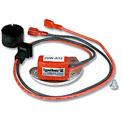

The Pertronix Ignitor® converts the older points-type ignition system on classic cars, to a solid-state electronic ignition system that's completely concealed, providing a stock appearance. The kit includes new micro controller that installs in just a few minutes. Generally, it installs just as easy as changing out the old points, as it only has two wires to hook up! The Pertronix Ignitor fits inside distributor without any alterations and/or modifications. Benefits include extended plug life, improved gas mileage, reduced misfires, quicker starts, and improved engine performance, and they come with a 30 month warranty.
|  |
The Ignitor II develops three times more energy between 3000 and 5000 RPM than the original Ignitor. The micro controller senses current in the coil and automatically adjusts the dwell to maintain peak energy through-out the entire RPM range, thereby providing more energy at high RPM's. Ignition energy is sustained with less heat buildup, which results in extended module and coil life. This also protects the module, coil and other components from heat damage. And it's legal in all 50 states and Canada.
Generally the kit runs about $120 bucks, however you'll also need a hotter coil, and we recommend upgrading to a set of performance wires as well, to get the best performance from the Pertronix ignition system. |
DRAWBACKS
While the Petronix improves spark quality, your still stuck with the poor operation of the Load-O-Matic distributor (60-67), if that's what you have. While this system may be adequate for stock motors, we highly recommend installing a Duraspark II or the DUI distributor for improved performance. The Duraspark and DUI, like most distributors, use mechanical advance (centrifugal weights in the distributor) to compensate for changes in rpm, which immediately swing out when rpm is increased. Whereas the "Load-O-Matic" uses venturi vacuum and a vacuum canister, which reacts slowly to the relatively weak venturi vacuum signal. As such, the "Load-O-Matic" distributors are very slow to provide the required spark advance when the engine is accelerated under load.
The result is soggy acceleration, which the "Load-O-Matic" distributors are notorious for. For more information, see our tech article on "Load-O-Matic" distributors.
The second drawback with this ignition system (and a major one in our opinion), is that if the unit fails, it can not be repaired. If your on a road trip, this could leave you stranded, or spending your time sitting on the side of the road. Most parts stores don't stock the Pertronix units for Ford six applications, so more than likely you'll have to order it online and wait for it to show up, or pay for overnight shipping. Therefore if you decide to install a Pertronix Ignitor, we recommend keeping an extra one in your glove box (or an old set of points), especially if you take a lot of road trips and/or depend on your vehicle as a daily driver. That being said, the company claims they have a failure rate of less than 1/2 of 1 percent over the 30 month warranty period.
The only real advantage in our opinion, is that it keeps the ignition system looking completely stock, which is very important if your working on a contours restoration project. The Pertronix Ignitor will keep your distributor in "original condition", while providing more power and reliability over the old points style ignition system.
|
|